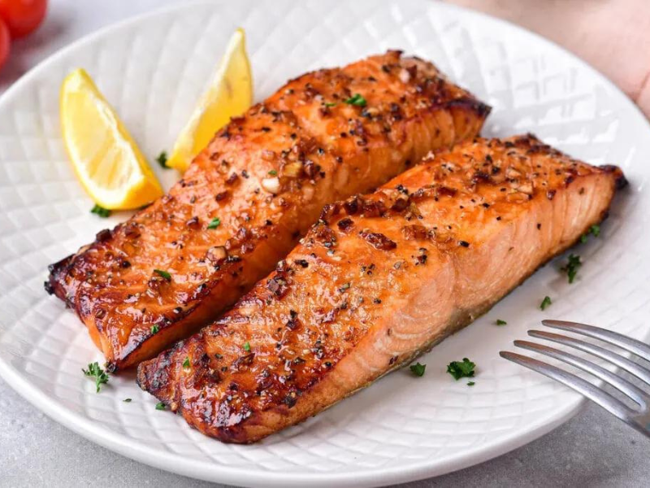

Filé de salmão ao forno facílimo
Ingredientes
- 500 g de filé de salmão
- Orégano
- Sal a gosto
- Limão
- Azeitonas fatiadas sem caroço
- 3 colheres de sopa de Molho de soja (shoyu)
- Azeite a gosto
- 1/2 cebola fatiada
Modo de preparo
- Lave o salmão com suco de limão.
- Aqueça o azeite e adicione a cebola fatiada, deixando no fogo até que fique transparente. Reserve.
- Cubra uma assadeira com papel alumínio de maneira que a sobra dê para forrar todo o peixe.
- Sobre o papel alumínio na assadeira, coloque o peixe já temperado com sal, regue com azeite e shoyu.
- Decore com fatias de azeitonas e um pouco de orégano.